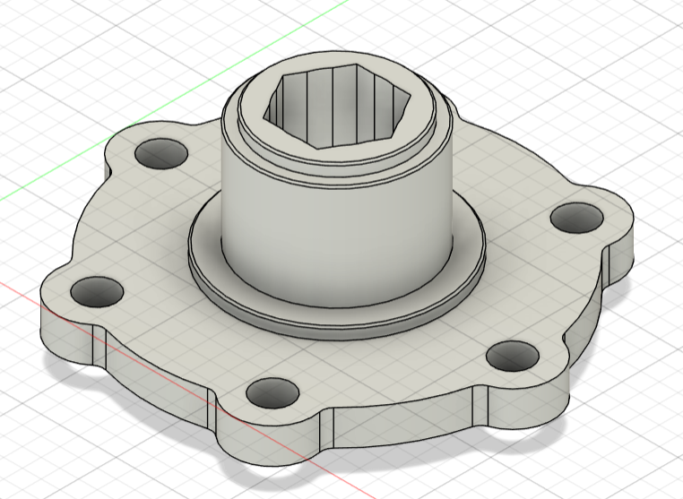

Overview
Robotics for Space Exploration was the first engineering design team I joined at the University of Toronto. I worked on the rover arm subteam, where my contribution was primarily mechanical: modelling parts and assemblies in CAD, translating designs into manufacturable prototypes, and iterating mechanisms based on fit, stiffness, mass, and drivetrain behaviour.
The experience introduced me to engineering beyond coursework. A part that looks clean in CAD still has to assemble correctly, transmit load, avoid unnecessary play, and be practical to manufacture. Much of my work involved moving repeatedly between the digital model and physical hardware rather than treating CAD as the final deliverable.


End effector & modular test fixture
I designed a robotic-arm end effector and a modular test fixture in Fusion 360. The fixture provided a repeatable way to prototype and evaluate mechanical concepts without requiring the complete rover-arm assembly for every iteration.
The work required more than defining the outer geometry of a part. Interfaces, fastener access, clearances, assembly order, manufacturability, and the ability to revise individual components all influenced the CAD. I then supported fabrication of prototypes using 3D printing and machining, allowing the design to be checked against the physical constraints that are easy to miss in a purely digital model.
Elbow transmission redesign
A major mechanical task was redesigning the rover-arm elbow transmission. The existing belt-driven concept introduced mass and mechanical play, so I developed a revised assembly intended to simplify torque transfer while improving the joint's mechanical engagement.
The redesign reduced component mass by approximately 30% without sacrificing torque capacity. I also incorporated hex-hub locking features to reduce backlash between drivetrain components, improving how directly actuator motion was transferred through the elbow joint.
This was an early introduction to engineering trade-offs: removing material is only useful if the mechanism still carries the required load, and tighter engagement is only useful if the parts can still be manufactured and assembled reliably.
Manufacturing & iteration
The project was strongly hands-on. I moved between Fusion 360, additive manufacturing, and machined components to evaluate whether proposed geometry worked once tolerances, fasteners, interfaces, and real assembly constraints were introduced.
That iterative process made CAD much more practical for me. Instead of modelling a component only for nominal geometry, I learned to think about how it would actually be held, printed or machined, fastened to neighbouring parts, serviced, and changed after testing. The feedback loop between CAD and fabrication became one of the most useful parts of the project.
Reflection
RSX was my first project-team experience and the place where I became comfortable treating CAD as an engineering tool rather than only a modelling exercise. It gave me early experience with mechanism design, tolerance-aware assembly, prototyping, and making design decisions under real manufacturing constraints.
The project also established a workflow I have continued to use in later aircraft and experimental work: model the system, identify the interfaces and constraints, build something testable, inspect what fails or does not fit, and use that evidence to drive the next iteration.